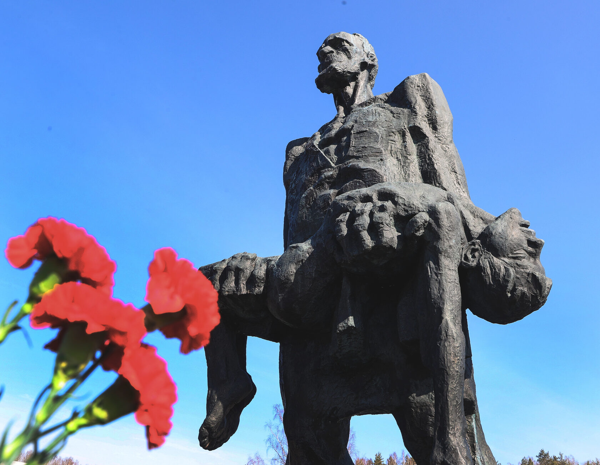
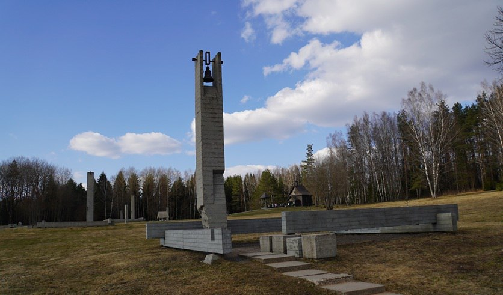
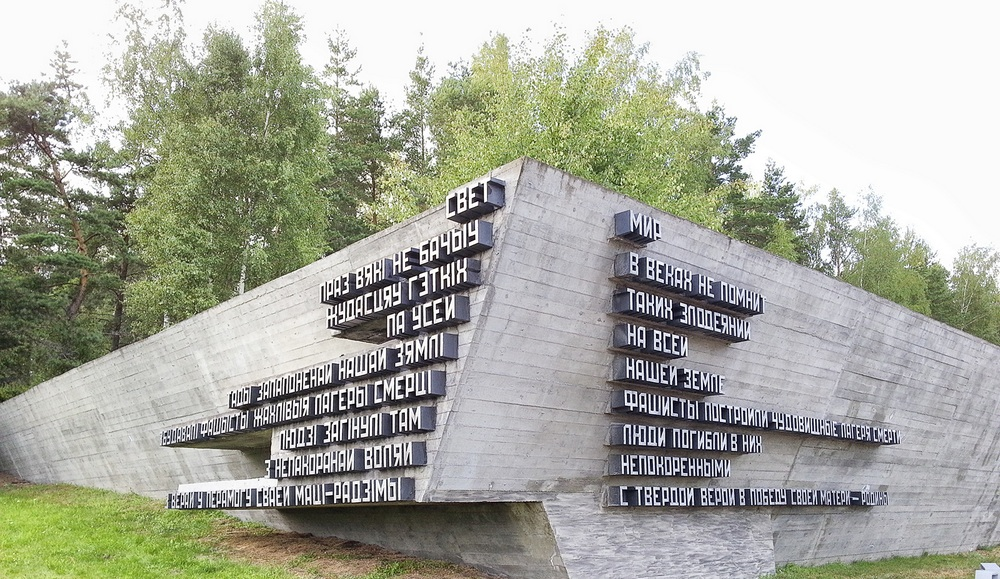

Государственный мемориальный комплекс «Хатынь» — священное место народной памяти и боли белорусской земли. Символ непреходящей скорби, увековечивший память сотен сожженных деревень и миллионов мирных граждан, погибших в огне Великой Отечественной войны.

Непокоренный человек.
Центром архитектурной композиции мемориала является шестиметровая бронзовая скульптура Иосифа Каминского, держащего на руках своего погибшего сына. Единственный выживший взрослый житель Хатыни стал живым олицетворением мужества всего белорусского народа, который фашистские палачи не смогли сломить и поставить на колени.

Венцы срубов и колокольный звон.
На месте каждого из 26 сожженных домов Хатыни установлены серые бетонные обелиски в форме нижних венцов деревянных срубов с печными трубами. Каждые 30 секунд над мемориальным комплексом раздается тихий, пронзительный звон колоколов, напоминающий миру о трагедии безвинных жертв карателей.

Кладбище деревень и Стена памяти.
Уникальное, единственное в мире Кладбище сожженных деревень хранит урны с землей 185 белорусских сел, разделивших участь Хатыни и так и не возродившихся после войны. Рядом расположена Стена памяти с нишами, где выбиты названия крупнейших лагерей смерти и мест массового уничтожения людей на нашей земле.